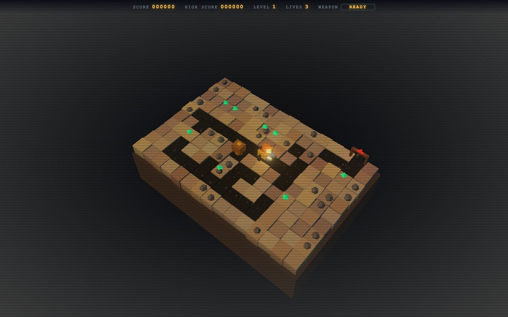

28 November 2026 · Agentic game · isometric 3D
Digger 3D · Hy4-Flash · Sushi 1.8.1 · STQ 2.25 bpw with vision · Tenaz main + Pi · thinking off
Tenaz ended COMPLETE after 12 h 5 min, 78 sessions and 23 task cards, all done. Three builder sessions stopped at the turn limit and were continued by fresh sessions; reviews sent eight tasks back, and the first final review found the in-game self-tests failing on the normal URL and added T023; the second accepted. Played: a full Digger 3D. Title and attract screen, digging, emeralds, the gold bag, Hobbins from the portal, death with a level reset, game over, the level 2 board and the weapon cooldown work, with no console errors. But the Digger keeps driving in its last direction until a wall, and it starts facing right down the tunnel that leads to the enemy portal: left alone after Enter it drives into the portal and the game is over in about 25 s. Level 1 has 8 emeralds and one gold bag.

What was checked
- Runner final state COMPLETE on 28 November 13:40:48.719 UTC. Bootstrap: the spec (82 requirements, R1, R2, R9 and R79 manual) and verify passed first time; the task cards were rejected once for leaving R57 without a task and accepted with 16 tasks. The replans 025, 039 and 054 added T017 to T020, T021 and T022; 070 added nothing. T001, T003, T010, T012, T013, T017 and T018 were accepted at the second attempt and T005 at the third; the other 15 tasks passed verify and review first time.
- Review findings that sent tasks back: T001, wrong score values and a 13-row grid; T003, a check that never left the title screen; T005, a bag crush that skipped the death reset and pushing reachable only through a test hook, then checks driven by fixtures; T010, enemy contact never killing the player in real play; T012, pause not freezing animations; T013, debug paths and edges not drawn from the real navigation; T017, the bonus-kill pop never visible; T018, a pause self-test that could not fail. One T005 reviewer (018) left no verdict after one turn and the review was retried.
- Final review: the first (075, 36 turns) played the build in Chrome from the normal URL and from ?test=1 and returned CHANGES: pressing T on the normal URL printed 6 failed self-tests (15 to 20 and 25), while ?test=1 printed 28 of 28. It added T023, which passed first time. The second (078, 28 turns) accepted, with R9 (frame rate) and R79 (art direction) left manual.
- Runner events: 78 sessions (4 bootstrap, 35 builder, 33 reviewer, 4 replan, 2 final reviewer). Three builder sessions (020-T005, 032-T009, 061-T018) stopped at 1.5 times the 40-turn budget and were continued by fresh sessions, not counted as attempts. The watchdog steered 24 builder and 4 reviewer sessions on turn pace, two builders on context pace and one on a big output, and asked 061 for its own passing check. 065-reviewer-T018 had an out-of-role file (.written) reverted. No compactions, provider errors, capacity limits or engine retries. No reply stopped at the 16,384-token output limit (the largest was 5,729 tokens); the 2,022 proxy records end in 1,940 tool use, 79 stop and 3 aborted at the turn limit.
- Configuration: Pi 1.6.0 over RPC with the openai-completions provider sushi, thinking off, text and image input, a 131,072-token context window and max_tokens 16,384; Tenaz main ed1c7ba (it reports 0.9.0 (ed1c7ba)), the binary of the Hy4 Raycaster run, with defaults: turnBudget 40, turnAbort 1.5, review on, 3 attempts, 90-minute sessions, temperature 0.8, sandbox off. Sushi was detected as a load-api engine; Tenaz never started or stopped it. Launched with --allow-weak-engine; the preflight reported reasoning false (reasoning_chars 0) and cache, tools and vision true, and its image check answered 'Red blue'.
- Thinking off: every run request reached Sushi with thinking=false, temp=0.80 and max_tokens=16384, and no proxy record has reasoning tokens. No operator thinking check was sent to this Sushi process before the run.
- Images: Pi's read tool returned the pixels of an image file to the model 61 times in 31 sessions (60 PNG and 1 JPEG reads, 34 different files), mostly reviewers viewing the game's screenshots. Sushi processed 890 images over 422 of the matched requests, most of them earlier images carried in the prompt. No session recorded an image refusal.
- Engine metrics: one Sushi 1.8.1 process (banner 'sushi 1.8.1 (MLX 0.32.3)', PID 34574, started by launchd at 01:32:28 UTC) wrote 2,028 request summaries. Summaries 1 to 6 are the preflight. The 2,019 completed proxy records match summaries 7 to 2,028 one to one, in order and uniquely by (prompt total, output, cached); no triple repeats in the log. The 3 aborted proxy records are the 3 client_disconnect summaries (3 output tokens each), left out of the figures. For all 78 sessions the matched summaries' fresh input, cached and output tokens equal the usage Tenaz journaled; the three stopped sessions journal one request more, the aborted one. Every matched request ended at end of sequence and used DFly2 drafts.
- Memory: Tenaz's 1,591 host samples run from start to end. Sushi held 43 to 45 GiB (44 GiB in most samples). Pressure was normal in 1,575 samples and at warning in 16, from 10:45 UTC. Free memory stayed between 0.10 and 7.44 GiB (median 0.24), swap in use between 16.84 and 21.88 GiB, and 3.35 GiB were swapped in.
- `verify --all` on a clean clone of the final commit 7b88c56 with the run's node_modules: 24 of 24 passed, as Tenaz recorded. The checks drive the built page in headless Chrome; T023 runs the in-game self-tests on the normal URL. `npm run build` succeeds, with Vite's warning of a chunk over 500 kB.
- Played after the run in headless Chrome at 60 fps (scripts and screenshots kept with the run) and in the desktop app's browser: the title and attract screen, digging, emeralds (+25), the gold bag, Hobbins coming out of the portal, death with the level reset the challenge asks for, game over, the level 2 board and the HUD weapon cooldown work, with no console errors. Level 1 is a 15 x 10 board with 8 emeralds and one gold bag.
- Faults in play: the Digger keeps driving in its last direction until it meets a wall, and it starts facing right down the row-4 tunnel that leads to the enemy portal. Left alone after Enter it drives into the portal and loses all three lives; the game is over in about 25 s without a key pressed. Not checked in live play: killing an enemy with a shot, the cherry bonus mode and a bag falling on an enemy; the run's own checks cover them.
- Public artifact: `vite build --base ./` of the final commit 7b88c56 in the clean clone; its JavaScript and CSS are byte-identical to the run's own dist (built after the run), and its index.html differs only in the asset paths (./assets in place of /assets). Three.js 0.187.0 is bundled; its MIT licence is published with the build. Screenshot: the headless capture taken after the run, 0.5 s after Enter, at 1280x800.
Limits of this evidence
Completion is the runner outcome. Hy4-Flash as the Sushi STQ 2.25 bpw pack on Sushi 1.8.1, thinking off, temperature 0.8, Pi 1.6.0 and the same Tenaz main ed1c7ba binary as the Hy4 Raycaster run of 27 November, on the Digger 3D brief of the Inkling 2 Mini Tenaz attempt. Against Inkling (COMPLETE_WITH_GAPS after 26 h 9 min, 101 sessions, 2,600 requests and 30 checks) it finished every task in 12 h 5 min with 78 sessions, 2,022 requests and 24 checks and no task left open; but its Digger keeps driving and starts on a path into the enemy portal. Decode ran at a median 19.7 tok/s, about half the 38.2 of the Hy4 Raycaster run: at this load Sushi had less free memory and streamed routed experts from SSD instead of holding them all resident, which likely explains the gap but was not tested. Memory pressure reached the warning level in 16 of 1,591 samples. One run.
Configuration
The model, serving engine and agent used for this execution.
| Field | Value | Detail |
|---|---|---|
| Model · primary | Hy4-Flash · primary · reasoning off (thinking off, as in the Hy4 Raycaster run): Tenaz and Pi sent thinking off on every request, and Sushi logged every request of the run with thinking=false. Sushi's own default for Hy4 thinks. The preflight saw no reasoning, and no reply of the run carried reasoning tokens. | Sushi STQ 2.25 bpw (routed experts EXL3) |
| Checkpoint · primary | Hy4-Flash-Sushi-STQ-2.25bpw | primary model artifact · revision capture-cf5ac35088b7 |
| Runtime | Sushi 1.8.1 · MLX 0.32.3; the log banner reads 'sushi 1.8.1 (MLX 0.32.3)', the same build as the Hy4 Raycaster run. · One Sushi server process for the whole run (PID 34574), started at 01:32:28 UTC on 28 November by the workstation's Raycast launcher through launchd, before init, and stopped after the run: --ctx-size 262144, --max-tokens 16384, --metrics, no --ssd-budget-gb. At load only 43.19 of the 46.11 GB needed were free, so after a 60 s wait Sushi chose a 39 GiB budget and streamed routed experts from SSD into a 34.35 GB cache of 417 slots per layer (512 would hold every expert, as in the Raycaster run). Everything else Sushi's default for Hy4: 8-bit KV cache, 4096-token prefill chunks, prefix cache on SSD only (20 GB), DFly2 drafts at depth up to 6, vision on, one request at a time. Temperature 0.8 pinned through Tenaz's proxy (every run request logged temp=0.80), top-p 1.0 and no top-k. Tenaz used it as a load-api engine through its proxy, with a 131,072-token context window of its own. mode | inference engine and exact build |
| Harness | Pi coding agent over RPC driven by Tenaz main ed1c7ba (it reports 0.9.0 (ed1c7ba)) 1.6.0 | the agent or client that drove the run |
| Runner | Tenaz main · build ed1c7ba after 0.9.0 (unreleased) | open-source runner, github.com/aartiles/tenaz · how the runner evolved |
| Hardware | Apple MacBook Pro · 64 GB unified memory | hardware recorded for this execution |
| Workload | Digger 3D · revision 1 | The byte-identical Digger 3D prompt as CHALLENGE.md (sha256 60c7d3a7...), behind the committed Tenaz brief (scripts/task-loop/briefs/digger-3d.md, sha256 f399121e..., the same files as the Inkling 2 Mini Tenaz attempt). The local model wrote its own spec, verify and task plan. Per-session context budget 85,196 tokens (0.65 of 131,072). Set up as the Hy4 Raycaster run of 27 November: Pi, thinking off, temperature 0.8, vision, Tenaz defaults, sandbox off, --allow-weak-engine and the same Tenaz binary. prompt_tokens counts every request's full prompt, cached or not. No operator action after launch. |
| Context window | 262,144 tokens | maximum context configured for the serving runtime |
| Repetitions | 1 | executions recorded for this workload; one means an indicative result, not an estimate |
Inference measurements
Engine-side rates for this run. Each figure states its own statistic; figures from different runs are not interchangeable.
| Metric | Value | Definition |
|---|---|---|
| TTFT · median | 3.164 s | Median engine-reported TTFT across matched requests, from Sushi's per-request metrics as Tenaz's proxy recorded them. · n=2019 · Mean 5.463 s, 90th percentile 11.28 s, maximum 78.1 s; 247 requests over 10 s. Includes the run's cache mix and image prefill; not a prefill rate. |
| Prefill · median | 127.4 tok/s | Median of Sushi's per-request prefill rate across matched requests, as Sushi reports it, cached input included. · n=2019 |
| Decode · per-request median | 19.7 tok/s | Median of Sushi's per-request decode rate across matched requests. · n=2019 · 10th percentile 16.4, 90th percentile 26.6 (linear interpolation), range 11.0 to 35.6. Median 19.0 below 16K prompt tokens (174 requests), 19.1 from 16K to 32K (730), 20.4 from 32K to 64K (1,074) and 20.7 from 64K (41). |
| Decode · output-weighted | 23.531 tok/s | Total output tokens divided by the sum of each request's output tokens over its decode rate. · n=2019 |
| Draft acceptance | 83.017 % | Accepted DFly2 draft tokens divided by drafted tokens, from the Sushi spec-stats line of each matched request. · n=2019 · 290,729 accepted of 350,204 drafted. DFly2, not MTP. |
| Host wired memory · median | 46.05 GiB | Median host wired memory across Tenaz's host samples from start to end of the run. · n=1591 · 46.58 GiB at the first sample, maximum 48.50 GiB. 83 samples from 08:20 UTC read 3.2 to 16.9 GiB. Host-wide, includes every process. |
| Server process memory · peak | 45 GiB | Largest Sushi process memory in Tenaz's host samples. · n=1591 · 44.0 GiB in most samples, Sushi's own process (PID 34574). |
| Swapped in during the run | 3.349 GiB | Sum of swap-in deltas across Tenaz's host memory samples (219,512 pages of 16 KiB); host-wide swap I/O, not resident memory. · n=1591 · Memory pressure normal in 1,575 samples and at warning in 16, from 10:45 UTC. Swap in use between 16.84 and 21.88 GiB, 17.02 GiB at the first sample. |
| Swapped out during the run | 6.767 GiB | Sum of swap-out deltas across Tenaz's host memory samples. · n=1591 |
| Free memory · sampled minimum | 0.1 GiB | Lowest free memory in Tenaz's host samples. · n=1591 · Median 0.24 GiB. |
Agent session counters
Agent-wide usage totals. These include reasoning, tool calls and waiting, and are not model decode speed.
| Metric | Value | Definition |
|---|---|---|
| Run elapsed | 725.4 min | Session 001 start after the preflight (2026-11-28T01:35:22.702Z) to COMPLETE (2026-11-28T13:40:48.719Z); includes tools, checks and reviews. · n=1 · 12 h 5 min 26.0 s; no pauses. `tenaz run` was launched at 01:35:05 UTC. |
| Agent sessions | 78 sessions | All harness sessions: 4 bootstrap, 35 builder, 33 reviewer, 4 replan and 2 final reviewer. · n=1 |
| Sessions ended early | 3 sessions | Sessions with ok=false. · n=78 · 020-builder-T005, 032-builder-T009 and 061-builder-T018, each stopped at 1.5 times the 40-turn budget and continued by a fresh session. |
| Operator interventions | 0 actions | No pauses, relaunches, configuration changes or edits after the first session started. · n=1 · One launch. |
| Model responses | 2,022 responses | All proxy request records of this run: 1,940 tool use, 79 stop and 3 aborted. · n=1 · The 3 aborted requests are the turns cut at the turn limit; none ended in an error. |
| Matched model requests | 2,019 requests | Completed proxy records matched one to one, in order and uniquely to Sushi summaries by (prompt total, output, cached). · n=2019 · Sushi summaries 1 to 6 (the preflight) and the 3 client_disconnect summaries of the aborted turns are excluded; every other summary of the process is matched, summaries 7 to 2,028. |
| Tool calls | 2,288 calls | Pi tool calls across all 78 sessions' RPC logs (equal to the journal's sum). · n=78 · 1,038 shell, 564 read, 441 edit, 179 write, 64 grep and 2 ls. |
| Tool errors | 71 errors | Pi tool calls that ended with isError, counted in the sessions' RPC logs. · n=2288 · 33 shell commands, 27 edits, 9 file reads, 1 grep and 1 write; not a count of malformed tool calls. |
| Image tool calls | 61 calls | Pi read calls that returned the pixels of an image file to the model. · n=2288 · In 31 of the 78 sessions: 60 PNG and 1 JPEG reads of the project's screenshots and contact sheets. |
| Context compactions | 0 compactions | Compaction count across all session records. · n=78 |
| Responses stopped at the output limit | 0 responses | Replies that stopped at the 16,384-token output limit. · n=2019 · Every matched reply ended at end of sequence in the Sushi log; the largest had 5,729 tokens. |
Context and token counters
Token totals as reported by the harness or engine. Cached and cumulative figures are not additive with fresh input.
| Metric | Value | Definition |
|---|---|---|
| Maximum prompt context | 70,920 tokens | Largest prompt across matched requests; not the configured server window. · n=2019 · Request 63 of 061-builder-T018. Its next request, 71,391 tokens, was the one aborted at the turn limit. |
| Cumulative input | 71,958,330 tokens | Sum of total prompt tokens across matched requests, including repeatedly reused context; not unique input. · n=2019 |
| Cached input | 69,431,556 tokens | Sum of prompt tokens Sushi restored from its SSD prefix cache for matched requests. · n=2019 |
| Fresh input | 2,526,774 tokens | Total prompt minus cached prompt tokens across matched requests. · n=2019 |
| Output tokens | 538,711 tokens | Sum of output tokens across matched requests. · n=2019 |
| of which reasoning output | 0 tokens | Reasoning tokens in the proxy records. · n=2022 |
| Prompt-cache token share | 96.4886 % | Cached prompt tokens divided by total prompt tokens, weighted by tokens across matched requests. · n=2019 |
Recorded check counters
Counts from the checks recorded with this run.
| Metric | Value | Definition |
|---|---|---|
| Tasks completed | 23 tasks | Final task cards marked done. · n=23 |
| Reviews returning changes | 9 reviews | Task review verdicts returning CHANGES: T001, T003, T005 (twice), T010, T012, T013, T017 and T018. 23 task reviews returned ACCEPT and one left no verdict. · n=33 · The first final review also returned CHANGES; the second accepted. |
| Project checks passing | 24 checks | Checks passing in `verify --all` on a clean clone of the final commit after the run; Tenaz recorded the same 24. · n=24 · Model-written checks, not an independent acceptance suite. |
Request records & provenance
2,019 numeric request records in proxy order, each matched one to one to a Sushi summary by total prompt, output and cached tokens. Prefill and decode rates and the DFly2 spec-stats (mtp_* fields: attempts, accepts and drafted, with acceptance as accepts over drafted) come from Sushi's log; TTFT from Sushi's per-request metrics as Tenaz's proxy recorded them. The preflight and the 3 requests aborted at the turn limit are excluded. No prompts, images, tool results, session identifiers or local paths are included.
Run ID: 2026-11-28-hy4-flash-sushi-v181-225bpw-tenaz-main-ed1c7ba-pi-digger-3d
One execution, with checks transcribed from the retained record. A completed session is not a quality score. Measurement method · All runs